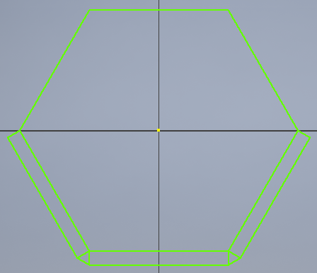
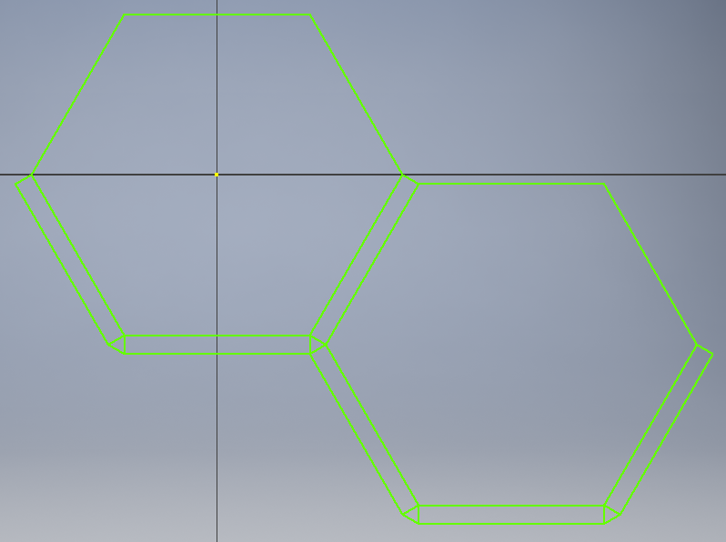
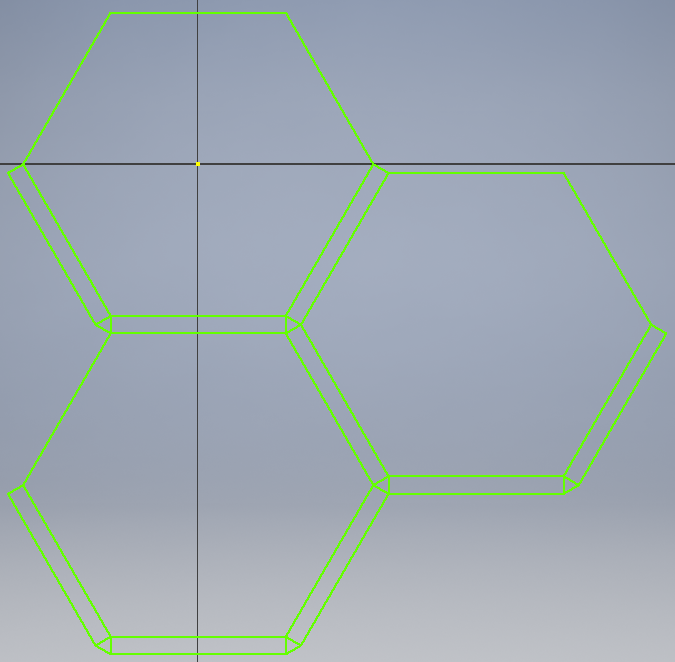
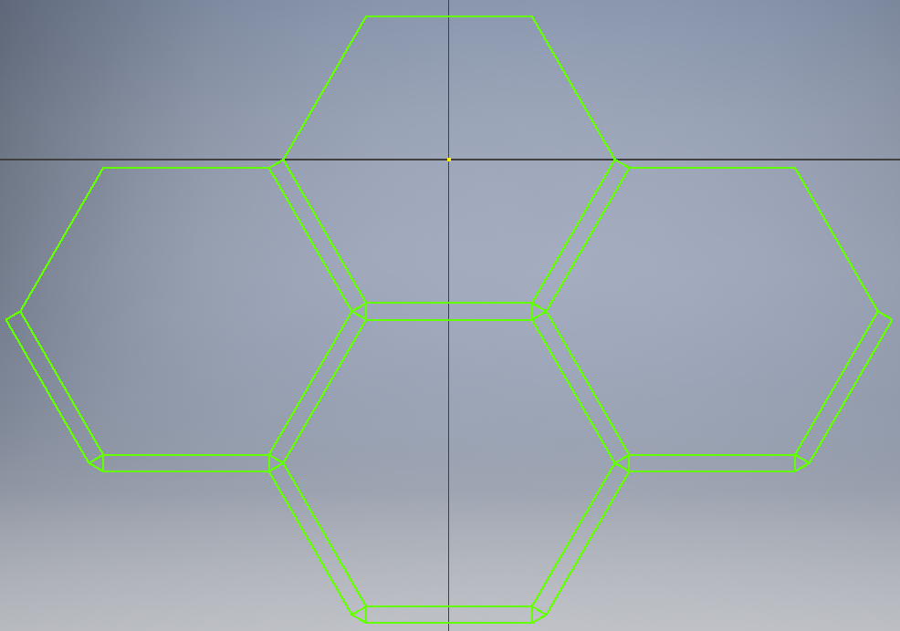
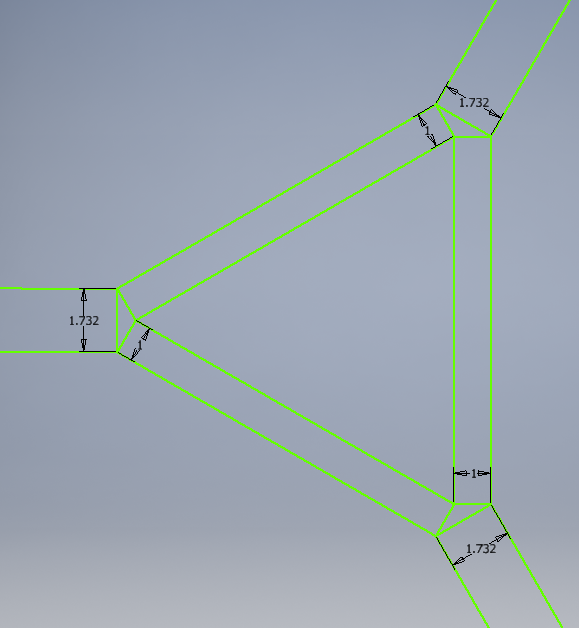
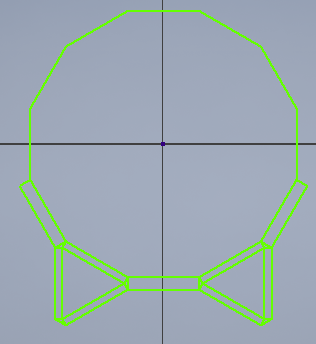
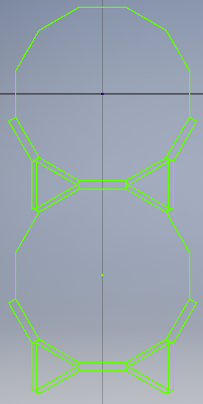
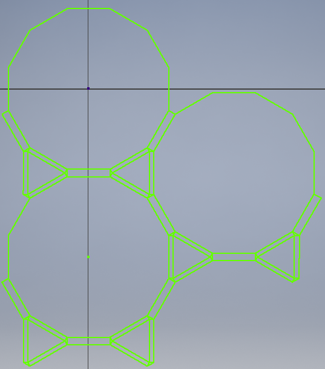
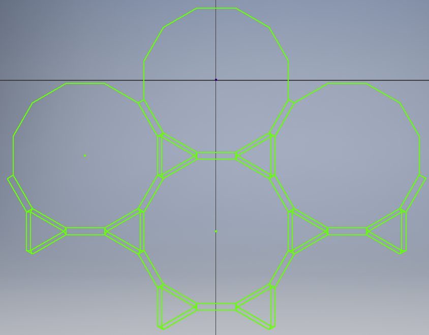
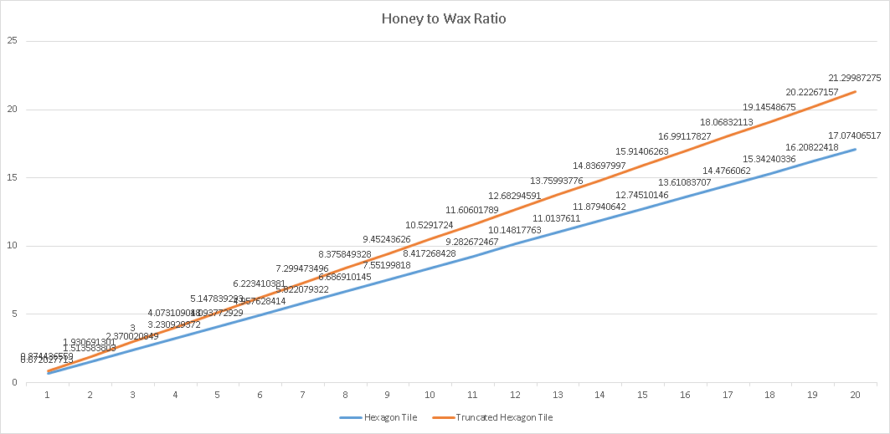

I understand that honeycomb conjecture assumes you use one shape.
If you are allowed to use multiple different regular polygons, as long as the length of the side is the same, what pattern would produce the maximum honey to wax ratio?
I am finding this ratio for regular polygon tilings:
The way I am doing this is by finding the smallest area that can be tiled, including both the honey and the wax.
Starting with the honeycomb conjecture's hexagons..
Each hexagon is bordered by 6 rectangles and 6 equilateral triangles.
If I want to tile the hexagon's border, I only need to include 3 rectangles and 2 triangles in each copy:
   
The area for a hexagon is
The area for a rectangle is
The area for an equilateral triangle is
Where s is the length of the side of the hexagon, w is the width of the border.
If we make the the length of s variable, while setting w to a constant 1, this ratio equals:
Looks good? Okay, now let's switch to a more complicated tile.
See Truncated hexagonal tiling on wikipedia
Honey would be inside the dodecagon and inside the surrounding 6 equilateral triangles.
Between each dodecagon and triangle is the wax border.
 Notice the borders are different sizes. If we set the thinner borders to 1, then the thicker border between the dodecagons is .
If I want to tile this, the honey requires 1 dodecagon and 2 equilateral triangles. The wax requires 6 thin borders, 3 thick borders, and 6 triangles with angles 30°, 30°, 120°.    
The area for a dodecagon is
The area for an equilateral triangle is
The area for the thin rectangle is
The area for the thick rectangle is
Small triangle has angles 30°, 30°, 120°, which actually has the same area as an equilateral triangle:
Where s is the length of the side of the dodecagon and triangle, w is the width of the border.
If we make the the length of s variable, while setting w to a constant 1, this ratio equals:
With hexagons, our honey to wax ratio is
With the truncated hexagonal tiling, the ratio is
Putting them on a graph, we get:  Almost a linear relationship, showing that the truncated hexagonal tiling has a larger ratio than the hexagon tiling.If I leave out the side triangles of the wax, the ratio for the hexagon is
If I leave out the side triangles of the wax, the ratio for the truncated hexagonal tiling is
I understand that honeycomb conjecture assumes you use one shape.
If you are allowed to use multiple different regular polygons, as long as the length of the side is the same, what pattern would produce the maximum honey to wax ratio?